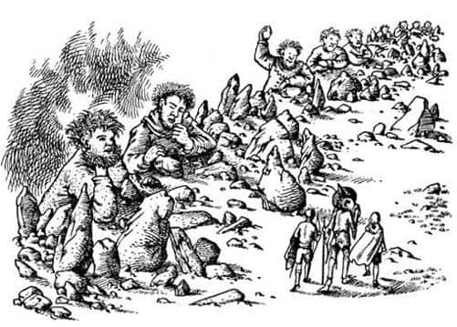

Kuzeyin Vahşi Toprakları
Ertesi gün saat dokuz civarında üç kişi sığlıkları takip edip taşlardan atlayarak Şıpırtı Nehri’ni geçmeye çalışıyordu. Nehir çok sığdı; kuzey kıyısına ulaştıklarında Jill sadece dizlerine kadar ıslanmıştı. Yaklaşık elli metre ileride, sarp kayalıkların üzerinde kırlık bir arazi başlıyordu.
“Sanırım yolumuz bu!” dedi Scrubb; nehrin sol taraftaki kırlık araziden vadiye döküldüğü yeri, batıyı işaret ediyordu. Kıllıkıpırdak başını salladı.
“Devler genelde bu vadinin kenarında yaşar” dedi. “Burası devler için çarşı gibi bir yerdir. Dik mik, ama dümdüz gitsek iyi olur.”
Yukarı tırmanabilecekleri bir yol buldular ve yaklaşık on dakika sonra soluk soluğa tepeye ulaştılar. Arkalarına, Narnia vadisinin topraklarına baktılar ve yüzlerini kuzeye çevirdiler. Geniş ve ıssız arazi yükselerek ufka uzanıyordu. Sollarında kayalık bir bölge vardı. Jill oranın devler vadisinin yamacı olduğunu düşünüyor, pek o yöne bakmak istemiyordu. Yola koyuldular.
Kış güneşi solgundu. Arazi yürümek için elverişliydi. İlerledikçe ıssızlık arttı; sadece küçük kuşları duyuyor, ara sıra da bir şahin görüyorlardı. Kuşluk vakti bir derenin kenarında, küçük bir çukurda su içmek ve dinlenmek için durduklarında Jill her şeye rağmen maceradan hoşlanmaya başladığını hissetmiş ve bunu diğerlerine söylemişti.
“Henüz bir macera yaşamadık ki” dedi Suratsız.
Yürüyüşler ilk moladan sonra – okulda teneffüs sonrası ya da yolculukta bir aktarma sonrası olduğu gibi – asla önceki gibi devam etmez. Tekrar yola çıktıklarında Jill vadinin kayalık yamacının daha yakın göründüğünü fark etti. Artık kayalar yassı değil, dikti. Aslında kayadan yapılmış küçük kulelere benziyorlardı. Şekilleri de çok komikti!
“Devler hakkındaki tüm hikâyelerin” diye düşündü Jill, “bu komik kayalardan türemiş olabileceğine inanıyorum. Buraya yarı karanlıkta gelmiş olsaydınız o kaya yığınlarının dev olduğuna inanabilirdiniz. Şuradakine bak! Tepesindeki yumrunun devin kafası olduğunu düşünüyor insan. Vücuda göre oldukça büyük, ama çirkin bir dev için iyi bile. Tüm o çalılıklar – ve kuş yuvaları – saç ve sakal için oldukça uygun. İki yandan çıkan o şeyler kulağa benziyor. Çok büyük ama sanırım devlerin kulakları da büyüktür, fillerinki gibi. Ve a-a-a-h!—”
Donakalmıştı. Yığın hareket ediyordu. Bu gerçek bir devdi. Yanılmasına imkân yoktu; başını çevirdiğini fark etmişti. Kocaman, aptal ve tombul yanaklı bir yüz görmüştü. Tüm o şeyler kaya değil, devdi. Sıraya dizilmiş kırk ya da elli dev vardı; ayakları vadinin dibinde, dirsekleri düzlüğün kenarına yaslanmış, bir duvara dayanan ya da güzel bir günde kahvaltı sonrası tembel tembel oturan insanların yaptığı gibi boş boş duruyorlardı.
“Dosdoğru yürüyün” diye fısıldadı onları fark eden Suratsız. “Onlara bakmayın. Ne yaparsanız yapın da, sakın koşmayın. Anında peşimize takılırlar.”
Böylece, devleri görmemiş gibi davranarak yola devam ettiler. Bu, bahçesinde saldırgan bir köpek olan bir evin önünden geçmeye benziyordu; ama çok daha korkutucuydu. Düzinelerce dev vardı. Öfkeli değillerdi, ama uysal oldukları da söylenemezdi, aslında ilgisiz görünüyorlardı. Yolcuları gördüklerine dair bir belirti yoktu.
Sonra – vız-vız-vız – havada bir şeyler uçuştu ve büyük bir kaya, büyük bir gürültüyle yirmi adım kadar önlerine düştü. Sonra başka bir kaya yedi metre kadar arkalarına güm! diye indi.
“Bize mi nişan alıyorlar?” diye sordu Scrubb.
“Hayır” dedi Suratsız. “Bize nişan alsalardı daha az tehlikede olurduk. Şu şeyi vurmaya çalışıyorlar; oradaki, şu sağdaki taş yığınını. Biliyorsunuz vuramazlar. Korkmayın emniyetteyiz; kötü nişancıdırlar. Güzel sabahlarda genellikle nişancılık oynarlar. Zekâlarının yettiği tek oyun budur.”

Çok kötü anlardı. Peş peşe dizilen devlerin sonu gelmeyecekmiş gibi görünüyordu. Henüz kayaları fırlatmaya ara vermemişlerdi ve kayaların bazıları çok yakınlarına düşüyordu. Kayaların yarattığı tehlike bir yana, yüzlerinin görüntüsü ve sesleri herkesi korkutmaya yeterdi. Jill bakmamaya çalışıyordu.
Yaklaşık yirmi beş dakika sonra devler, görünüşe bakılırsa kavga etmeye başlamışlardı. Bu onların nişancılık oyununa son verdi vermesine, ama kavga eden devlerin yakınında bulunmak hiç de hoş değildi. Yaklaşık yirmişer heceli uzun ve anlamsız kelimeler sarf ediyor, birbirlerine öfkeyle bağırıyor ve birbirleriyle alay ediyorlardı. Köpürüp saçma sapan şeyler söylüyorlar, hışımla sıçrıyorlardı ve yere indiklerinde tüm ova, sanki deprem olmuş gibi sallanıyordu. Büyük ve hantal taş baltalarla birbirlerinin başlarına vuruyorlardı; ama kafaları öyle sertti ki, baltalar sekiyor ve vuruşu yapan canavar, baltasını atıp parmakları acıdığı için acıyla bağırıyordu. Ancak öylesine aptallardı ki, bir dakika sonra aynı şeyi tekrarlıyorlardı. Uzun vadede bu iyi bir şeydi, çünkü bir saat sonra tüm devler yara bere içinde kalmış, hepsi oturup ağlamaya başlamıştı. Oturduklarında başları kayaların arkasında kalıyordu ve bu yüzden onları göremiyordunuz. Ama devler bir mil geride kaldıktan sonra bile Jill onların büyük bebekler gibi inleyip hüngür hüngür ağladığını duyabiliyordu.
O akşam çıplak arazide gecelediler ve Suratsız, sırt sırta uyuyarak battaniyelerini nasıl en iyi şekilde kullanabileceklerini gösterdi (Böylece sırtları birbirlerini sıcak tutuyordu ve dahası üstlerine iki kat battaniye örtebiliyorlardı). Buna rağmen soğuktu, yerse sert ve engebeliydi. Kıllıkıpırdak, kuzeye gidince karşılaşacakları soğuğu onlara hatırlatarak rahatlamaları gerektiğini söyledi; ancak bu, çocukları hiç de keyiflendirmedi.
Günlerce Yüksek Ova’da yolculuk yaptılar ve domuz etine dokunmadan genellikle Eustace ve Suratsız’ın vurduğu kuşlarla (kuşkusuz bunlar konuşan kuşlar değildi) karınlarını doyurdular. Jill, Eustace’i yay kullanmayı bildiği için kıskanıyordu; Eustace, Kral Caspian’la yaptığı yolculukta öğrenmişti bunu. Arazide birçok dere bulunduğu için su sıkıntısı çekmemişlerdi. Jill, kitaplarda insanların av eti yediğinden bahsedildiğini, ama ölü kuşları temizleyip tüylerini yolmanın ne kadar uzun zaman aldığına, bunu yaparken insanın parmaklarının ne kadar üşüdüğüne hiç değinilmediğini düşündü. İyi ki çok az dev görmüşlerdi. Bir dev onları fark etmişti, ama sadece kükreyerek gülmüş ve işine devam etmişti.
Yaklaşık on gün sonra çevre koşullarının değiştiği bir yere ulaştılar. Çıplak arazinin kuzey yamacına gelmişlerdi; uzun, dik bir yokuş, değişik ve daha vahşi topraklara iniyordu. Yamacın dibinde sarp kayalıklar vardı. Bunların ötesindeyse yüksek dağların, karanlık uçurumların, taşlı vadilerin, dibi görünmeyen dar dere yataklarının; öfke dolu bir sessizlikle karanlık derinliklere dalan nehirlerin olduğu bir ülke uzanıyordu. Uzak yamaçlardaki kar serpintisine dikkat çekenin Suratsız olduğunu söylemeye gerek yok sanırım.
“Kuzey yamaçlarında daha fazla kar varsa şaşmam” diye eklemeyi de ihmal etmedi.
Yamacın eteklerine erişmeleri zaman almıştı, oraya geldiklerinde uçurumun tepesinden, batıdan doğuya doğru akan nehri gördüler. Kendi taraflarında olduğu gibi karşı tarafta da nehrin etrafı uçurumlarla çevrilmişti; güneş görmeyen, çağlayanlar ve girdaplarla dolu yeşil bir nehirdi. Gürültüsü yerleri zangır zangır titretiyordu.
“Bunun iyi yanı şu” dedi Suratsız, “eğer uçurumdan inerken kafamızı kırarsak, nehirde boğulmaktan kurtuluruz.”
“Bu da ne?” dedi Scrubb aniden solunu, nehrin yukarısını işaret ederek. O yöne baktılar ve görmeyi bekledikleri son şeyi gördüler; bu bir köprüydü. Ne köprüydü ama! Kemer bir uçurumun tepesinden diğer taraftaki uçurumun tepesine uzanıyordu. St. Paul’ün kubbesi yerden ne kadar yüksekteyse, köprünün ortası da uçurumun kenarından o kadar yüksekteydi.
“Bu devlerin köprüsü olmalı” dedi Jill.
“Bir büyücünün köprüsü olması daha olası” dedi Suratsız. “Böyle bir yerde büyülere dikkat etmeliyiz. Bence bir tuzak. Sanırım biz ortasındayken buharlaşıp yok olacak.”
“Ah, bu kadar karamsar olma lütfen” dedi Scrubb. “Neden normal bir köprü olmasın?”
“Sence gördüğün o devlerde böyle bir şey inşa edecek zekâ var mı?” diye sordu Suratsız.
“Başka devler tarafından inşa edilmiş olamaz mı?” dedi Jill. “Yüzlerce yıl önce yaşamış, şimdikilerden çok daha akıllı devleri kastediyorum. Aradığımız Devler Şehri’ni inşa eden devler tarafından yapılmış olabilir ve bu doğru yolda olduğumuz anlamına gelir; antik şehre giden antik köprü!”
“Bu gerçekten çok zekiceydi, Pole” dedi Scrubb. “Öyle olmalı. Haydi.”
Böylece köprüye yürüdüler. Köprüye ulaştıklarında, yeterince sağlam olduğunu gördüler. Taşların her biri Stonehenge’deki taşlar kadar büyüktü, çatlamış ve parçalanmış olmalarına rağmen bir zamanlar iyi taş ustalarınca işlenmiş oldukları anlaşılıyordu. Korkuluklar oymalarla süslenmişti; korkunç tanrıların, çıyanların, mürekkepbalıklarının, minotorların ve devlerin ufalanmış yüzleri görülüyordu. Suratsız hâlâ köprüye güvenmiyordu, ama geçmeye razı oldu.
Kemerin tepesine tırmanış uzun ve yorucuydu. Yer yer, taşları düşmüş, binlerce metre aşağıda köpüren nehri görmenizi sağlayan korkunç delikler açılmıştı. Altlarında bir kartalın uçtuğunu gördüler. Tırmandıkça hava soğudu, rüzgâr öylesine sert esiyordu ki, zorlukla ayakta durabiliyorlardı, köprü sanki sallanıyordu.
Tepeye ulaşıp köprünün öbür tarafa inen kısmından aşağıya bakabildiklerinde, dağların içlerine doğru uzanan, geniş bir caddeyi andıran kalıntıları gördüler. Döşeme taşlarından çoğu kaybolmuş, bunların oluşturduğu geniş aralıklardan otlar fışkırmıştı. Bu antik yolun üzerinde, onlara doğru gelen, yetişkin insanlara benzeyen iki atlı vardı.
“Devam edin, onlara doğru yürüyün” dedi Suratsız. “Böyle bir yerde karşılaşacağınız kişinin düşman olması ihtimali çok yüksektir, ama korkuyormuş gibi görünmemeliyiz.”
Köprü bitip de çimlere adım attıklarında iki yabancı epeyce yakındaydı. Biri, zırhlar içinde, siperliğini de gözlerinin önüne indirmiş bir şövalyeydi. Zırhları ve atı siyahtı; kalkanında arma, mızrağında bayrak yoktu. Diğeri beyaz bir ata binmiş bir kadındı, at öylesine güzeldi ki, insanın burnunu öpüp şeker veresi geliyordu. Ata yan binmiş ve rüzgârda dalgalanan uzun, göz kamaştırıcı yeşil bir elbise giymiş olan kadın da çok güzeldi.
“İyi günler, yolcular-r-r-r” diye bağırdı kadın bir kuş ötüşü kadar tatlı bir sesle ve r’leri zarif bir şekilde titreştirerek. “Bazılarınız bu zorlu çoraklıkta yürümek için çok genç.”
“Doğru olabilir, Bayan” dedi Suratsız gergin ve tetikte.
“Devlerin harabe şehrini arıyoruz” dedi Jill.
“Har-r-r-rabe şehir mi?” dedi Kadın. “Tuhaf bir yer arıyorsunuz. Bulursanız ne yapacaksınız?”
“Bizim—” diye başladı Jill, ama Suratsız sözünü kesti.
“Özür dilerim Bayan. Sizi ve arkadaşınızı tanımıyoruz ve siz de bizi tanımıyorsunuz. Arkadaşınız ne kadar da sessiz biri, değil mi? Alınmazsanız, yabancılarla kendi işlerimiz hakkında konuşmamayı tercih ederiz. Yakında yağmur yağacağını düşünüyor musunuz?”
Kadın güldü; hayal edebileceğiniz en içten gülüştü bu ve müziğe benziyordu. “Pekâlâ çocuklar” dedi, “yanınızda zeki, ciddi ve deneyimli bir rehber var. Kendi görüşlerini dile getirmesinin bir zararı olacağını sanmam, ama ben de kendiminkileri söyleyeceğim. Harabe Şehir ismini sık sık duymuşumdur, ancak oraya giden ya da yolu bilen birine rastlamadım. Bu yol nazik devlerin oturduğu Harfang Kalesi’ne ve kasabasına gider. Oradaki devler, Yüksek Ova’dakiler gibi aptal, saldırgan, vahşi ve her türlü hayvanlığa alışkın değil, yumuşak, uygar, hoşgörülü ve naziktir. Harfang’da Harabe Şehir hakkında bilgi edinebilirsiniz, belki de işe yaramaz, ama kalacak iyi bir yer ve neşeli ev sahipleri bulacağınızdan emin olabilirsiniz. Kışı orada geçirirseniz ya da en azından rahat edip gücünüzü tazelemek için orada birkaç gün oyalanırsanız akıllılık edersiniz. Orada buharı tüten hamamlar, yumuşak yataklar ve harıl harıl yanan ocaklar bulacaksınız; ve ızgaralar, fırında pişmiş yiyecekler, tatlılar ve tuzlular günde dört kez masanızda olacak.”
“Vay be!” diye bağırdı Scrubb. “Bu bir şeye benziyor işte! Güzel bir yatakta uyuduğumuzu düşünsenize.”
“Evet, bir de sıcak bir banyo yaptığımızı” dedi Jill. “Bizi ağırlayacaklarından emin misiniz? Onları tanımadığımızı biliyorsunuz.”
“Sadece” diye cevapladı Kadın, “yeşil giysili kadının selam söylediğini, Sonbahar Şenlikleri için onlara iki güzel güneyli çocuk gönderdiğini söyleyin.”
“Çok, çok teşekkürler” dedi Jill ve Scrubb.
“Fakat unutmayın” dedi Kadın. “Ne gün gittiğinizin önemi yok, ama geç saatte çalmayın kapıları. Çünkü ikindiye doğru kapıları kapatırlar ve ne yaparsanız yapın kilitledikten sonra bir daha açmazlar, böyle bir âdetleri var.”
Çocuklar pırıldayan gözlerle tekrar teşekkür ettiler, Kadın da onlara el salladı. Kıllıkıpırdak minare şapkasını çıkarıp reverans yaptı. Sonra sessiz şövalye ve Kadın toynak sesleri arasında atlarını köprüden yukarıya sürdüler.
“Pekâlâ!” dedi Suratsız. “O kadının nereden gelip nereye gittiğini öğrenmek için her şeyimi verirdim. Devler ülkesinin vahşi topraklarında karşılaşmayı umduğunuz türden biri değil, değil mi? Eminim iyi şeyler planlamıyor.”
“Ah, saçma!” dedi Scrubb. “Ben onun mükemmel biri olduğunu düşünüyorum. Sıcak yemekleri ve sıcak odaları düşün. Umarım Harfang uzak değildir.”
“Ben de öyle düşünüyorum” dedi Jill. “Şahane bir elbisesi vardı, değil mi? Hele atı!”
“Keşke” dedi Suratsız, “keşke onun hakkında daha fazlasını bilseydik.”
“Ben ona bazı sorular soracaktım” dedi Jill. “Ama sen hakkımızda bir şey söylemezsen ben bu cesareti nereden bulabilirdim ki?”
“Evet” dedi Scrubb. “Neden o kadar gergin davrandın? Onlardan hoşlanmadın mı?”
“Onlar mı?” dedi Suratsız. “Onlar da kim? Ben sadece bir kişi gördüm.”
“Şövalyeyi görmedin mi?” diye sordu Jill.
“Zırhı gördüm” dedi Suratsız. “Neden konuşmadı?”
“Sanırım utangaç biriydi” dedi Jill. “Ya da sadece ona bakıp, onun tatlı sesini dinlemek istiyordu. Onun yerinde olsaydım ben de öyle yapardım.”
“Siperliğini kaldırıp içine baktığında ne göreceğini merak ediyorum” dedi Suratsız.
“Lanet olsun!” dedi Scrubb. “Zırhın şeklini düşün! İçinde bir adamdan başka ne olabilir ki?”
“Bir iskelete ne dersin?” diye sordu Kıllıkıpırdak keyifle. “Ya da belki de” diye ekledi sonradan aklına gelmiş gibi, “hiçbir şey. Yani görülebilen bir şey değil de görünmez birisi.”
“Tanrı aşkına Suratsız” dedi Jill ürpertiyle, “böyle kötü fikirleri nereden buluyorsun! Tüm bunları nasıl düşünebiliyorsun?”
“Hadi, boşver onun fikirlerini!” dedi Scrubb. “Her zaman en kötü ihtimali düşünüyor ve her seferinde yanılıyor. O nazik devleri düşünelim ve mümkün olduğunca çabuk Harfang’a gidelim. Keşke ne kadar uzakta olduğunu bilebilseydim.”
Suratsız’ın hakkında uyarıda bulunduğu o kavgalardan ilkini neredeyse yapıyorlardı. Gerçi Jill ve Scrubb önceden de birbirlerini tersleyip ağız dalaşı yapmışlardı, ama bu ilk ciddi anlaşmazlıktı. Suratsız onların Harfang’a gitmesini hiç istemiyordu. Devlerin “nazik” olmasıyla ne kastedildiğini bilmediklerini ve Aslan’ın, nazik ya da değil, devlerle kalmaları konusunda bir şey söylemediğini hatırlattı. Bununla beraber rüzgârdan, yağmurdan, kamp ateşinde pişirilmiş cılız kuşlardan, uyudukları sert ve soğuk yerlerden bıkan çocuklar, nazik devleri ziyaret etmeye kesin kararlıydı. Suratsız sonunda razı oldu, ama bir koşulu vardı. O izin vermedikçe, çocuklar nazik devlere, ne Narnia’dan geldiklerini ne de Prens Rilian’ı aradıklarını söyleyeceklerine yemin etmeliydiler. Çocuklar söz verdiler ve yola koyuldular.
Kadınla yaptıkları konuşmadan sonra her şey kötü gitmeye başladı. İlk olarak arazi kötüleşti; yol sert kuzey rüzgârlarının dövdüğü dar vadilerden geçiyordu. Ateş yakmak için kullanabilecekleri herhangi bir şey ya da diğer arazideki gibi kamp yapabilecekleri küçük, hoş çukurluklar yoktu. Yer hep taşlıktı ve gündüzleri ayaklarını, geceleri de vücutlarını acıtıyordu.
İkinci olarak, Kadın Harfang’dan bahsederek neyi amaçlamış olursa olsun, çocukların üzerinde bıraktığı etki kötüydü. Yataklar, banyolar, sıcak yemekler ve bir çatının altında olmanın güzelliğinden başka bir şey düşünemiyorlardı. Artık Aslan ya da kayıp Prens hakkında hiç konuşulmuyordu. Jill her sabah ve akşam işaretleri tekrarlama huyundan vazgeçmişti. Önce kendine çok yorgun olduğunu söylemiş, çok geçmeden her şeyi unutmuştu. Harfang’da iyi zaman geçirecekleri fikrinin onları keyiflendirmiş olması gerektiğini düşünseniz de, bu onların kendilerine acımalarına, birbirlerine ve Suratsız’a karşı hırçın ve ters davranmalarına yol açmıştı.
Sonunda bir öğleden sonra, yürüdükleri boğazın genişlediği ve köknar ağaçlarının yükseldiği bir yere geldiler. İleriye baktılar ve dağları geçtiklerini gördüler. Önlerinde ıssız ve kayalık bir ova uzanıyordu. Onun ötesindeyse karlarla kaplı dağlar vardı ve dağlarla aralarında, üstünde düz bir alan bulunan bir tepe yükseliyordu.
“Bakın! Bakın!” diye bağırdı Jill ve ovayı işaret etti; akşamın karanlığında, yassı tepenin ötesindeki ışıkları gördüler. Işıklar! Ne ayışığı ne de ateşti; sıcak ve keyifli, aydınlık pencerelerdi bunlar. Eğer ıssız bölgelerde kalmadıysanız neler hissettiklerini anlayamazsınız.
“Harfang!” diye bağırdı Jill ile Scrubb heyecanla. “Harfang” diye tekrarladı Suratsız donuk ve hüzünlü bir sesle. Fakat “Hey! Yabankazları!” diye ekledi ve aynı anda omzundan yayını çıkarıp şişko bir kazı aşağı indirdi. Harfang’a girmeyi denemek için vakit çok geçti. Ateş yakıp sıcak bir yemek yediler ve bir haftadan beri ilk kez üşümeden başladılar geceye. Ateş söndükten sonra soğuk arttı, sabah uyandıklarında battaniyeleri donmuş, kaskatı kesilmişti.
“Hiç fark etmez!” dedi Jill, ayaklarını yere vurarak. “Bu akşam sıcak bir banyo yapacağız.”